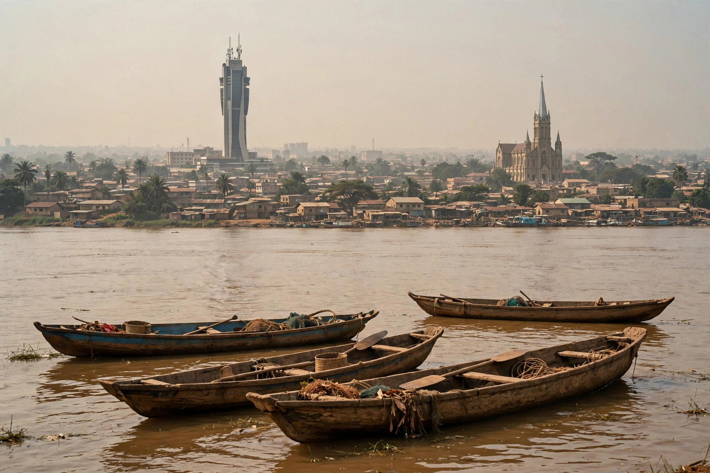

[Image placeholder: Brazzaville from across the Congo River]| Country | Republic of the Congo |
|---|---|
| River | Congo River, opposite Kinshasa |
| Population | About 2 million (metro estimates) |
| Founded | 1880 by Pierre Savorgnan de Brazza |
**Brazzaville** is the capital and largest city of the Republic of the Congo, on the north bank of the Congo River, facing Kinshasa, capital of the Democratic Republic of the Congo, across the Pool Malebo — the two closest capital cities in the world after Rome and Vatican City. No bridge yet joins them; ferries cross the river.
Founded in 1880 by the French explorer Pierre Savorgnan de Brazza, it was capital of French Equatorial Africa and, during the Second World War, the symbolic capital of Free France after 1940 (hosting de Gaulle's Brazzaville Conference of 1944). After independence in 1960 it became capital of the Republic of the Congo, and suffered heavy fighting in the civil war of 1997.
Landmarks include the Basilica of Sainte-Anne (1949, with its green-tiled roof), the Nabemba Tower, the colourful Poto-Poto district and its famous school of painting, and the lively markets selling sapeur fashion — Brazzaville and Kinshasa share the flamboyant La Sape culture of elegant dress.
The city is the country's administrative and transport hub, linked by rail to the Atlantic port of Pointe-Noire; oil wealth from offshore fields dominates the national economy though little of it is produced in the capital itself.